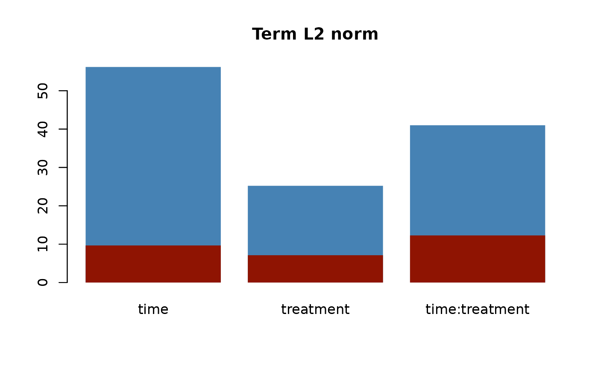
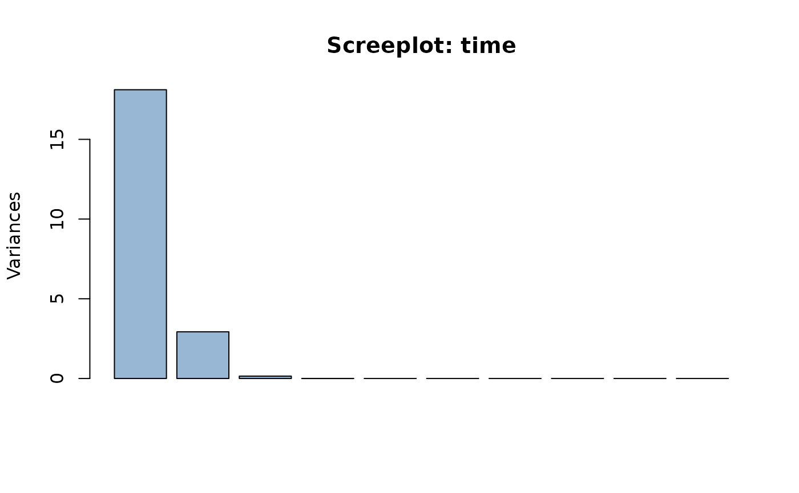
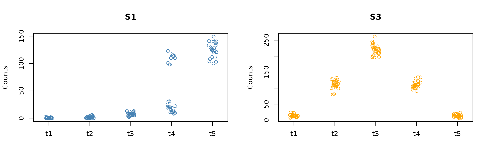
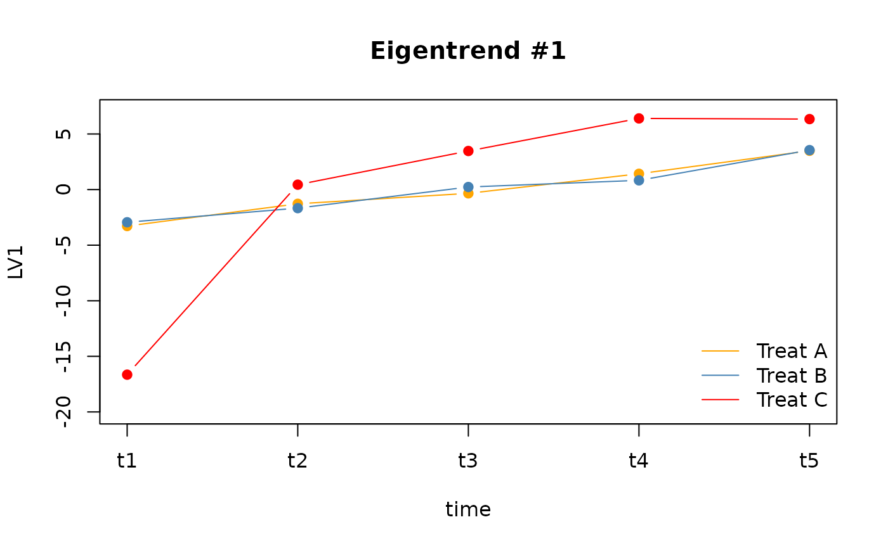
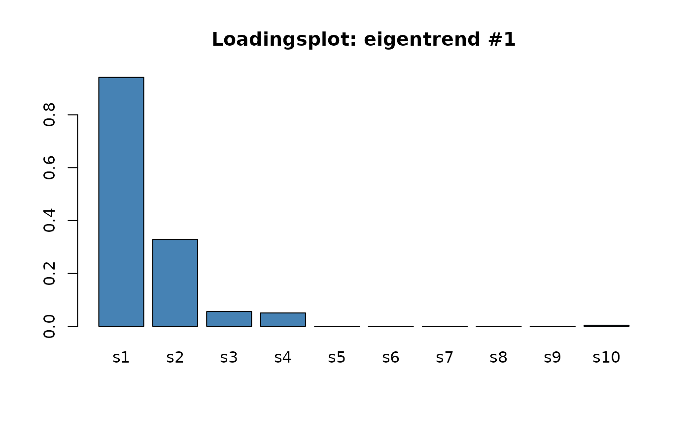

ASCA Decomposition of Synthetic Count Data
Pietro Franceschi
2021-08-05
Asca_dec_count_data.RmdIntroduction
- Visualize the characteristics of multifactorial designs in multivariate context.
- With standard PCA one focuses on the effect responsible of the larger variance. This does not allow neither to disentangle the contribution of the different design factors nor to pinpoint the variables which are most influential for each factor
- The idea of ASCA is to couple ANOVA decomposition with PCA. ANOVA is used to model each variable as a function of the different elements of the design, PCA is then applied drive a multivariate interpretation of the matrices holding the univariate expected values for each design factor.
- In matrix representation the ASCA decomposition is Y = A + B + C + … + Err where each matrix holds the expected values
- The expected values can be estimated in different way, but using glm to do that has two advantages: the approach can be applied the method to unbalanced designs, one can extend the idea to response variables with non gaussian distribution like the one which are encountered in ecology or metagenomics.
- This second perspective is extremely interesting due to the growing availability of complex ecological and biological datasets
The dataset
To illustrate the usefulness of ASCA in the analysis of count data we will considered a synthetic dataset which is available as a part of the package installation.
Experimental design
- 10 count variables (identified as
s1 .. s10) - 2 factor design (5 time points, 3 treatments)
- 45 samples
The example dataset was designed to have two latent variables for the time factor and one for the treatment.
The dataset is included in the package as a two element list containing the count matrix synth_count_data$counts and a data frame holding the association between the 45 samples and the design factors (synth_count_data$design)
## load the libraries
library(ASCA)
#> Loading required package: parallel
#> Loading required package: Matrix
library(tidyverse)
#> ── Attaching packages ─────────────────────────────────────── tidyverse 1.3.1 ──
#> ✓ ggplot2 3.3.5 ✓ purrr 0.3.4
#> ✓ tibble 3.1.3 ✓ dplyr 1.0.7
#> ✓ tidyr 1.1.3 ✓ stringr 1.4.0
#> ✓ readr 2.0.0 ✓ forcats 0.5.1
#> ── Conflicts ────────────────────────────────────────── tidyverse_conflicts() ──
#> x tidyr::expand() masks Matrix::expand()
#> x dplyr::filter() masks stats::filter()
#> x dplyr::lag() masks stats::lag()
#> x tidyr::pack() masks Matrix::pack()
#> x tidyr::unpack() masks Matrix::unpack()
library(ggrepel)
## load the dataset
data("synth_count_data")
## show a compact representation of the structure of the dataset
str(synth_count_data)
#> List of 2
#> $ counts: int [1:45, 1:10] 0 2 1 0 0 1 0 0 1 2 ...
#> ..- attr(*, "dimnames")=List of 2
#> .. ..$ : NULL
#> .. ..$ : chr [1:10] "s1" "s2" "s3" "s4" ...
#> $ design:'data.frame': 45 obs. of 2 variables:
#> ..$ time : chr [1:45] "t1" "t1" "t1" "t1" ...
#> ..$ treatment: chr [1:45] "A" "A" "A" "B" ...Here we are dealing with a design with 5 time points and three treatments
## time
unique(synth_count_data$design$time)
#> [1] "t1" "t2" "t3" "t4" "t5"
## treatment
unique(synth_count_data$design$treatment)
#> [1] "A" "B" "C"The following plot shows the distribution of the counts for the first specie as a function of the design factors
## Palette for time factor
timepal <- c("#e41a1c","#377eb8","#4daf4a","#984ea3","#ff7f00")
names(timepal) <- unique(synth_count_data$design$time)
## point shapes for treatments
treatpch <- c(1,13,17)
names(treatpch) <- unique(synth_count_data$design$treatment)
## plot the trend of the first specie
plot(synth_count_data$counts[,1],
col = timepal[synth_count_data$design$time],
pch = treatpch[synth_count_data$design$treatment],
ylab = "Counts", xlab = "Sample id", main = "Specie 1")
legend("topleft", pch = 1, col = timepal, legend = names(timepal), bty = "n")
legend("bottomright", pch = treatpch, col = "gray70",
legend = names(treatpch), bty = "n")
Illustration of the effects of the experimental design on the counts of Specie #1
The plot clearly shows the non normal distribution of the count data and dependence of the response variable on the design factors.
Performing the decomposition
The function which performs the decomposition is ASCA_decompose and the results are organized in a list. To run the function it is necessary to provide:
- a
matrixor adata.framewith the counts - a
data.framewith the association between the samples and the design. Beware that numeric columns will results in a decomposition error! - a formula (actually a character vector) which specify the form of the decomposition
- a
listwith the parameters which will be passed to theglmcall - a character vector which specifies the type of errors which will be returned by
glm
For a detailed discussion of the properties of the different GLM error please refer to the documentation of residuals.glm. By default ASCA_decompose return Pearson residuals which are defined as
\[ r_{p} = \frac{y - \hat{\mu}}{\sqrt{V(\hat{\mu)}}} \]
Where \(V(\hat{\mu})\) is the standard error of the estimated expected value.
In the case of our count data, the glm should be performed by specifying a Poisson family
## perform the decomposition
asca0 <- ASCA_decompose(
d = synth_count_data$design,
x = synth_count_data$counts,
f = "time + treatment + time:treatment",
glm_par = list(family = poisson()))Let’s give a look to the structure of the asca0 object
str(asca0)
#> List of 4
#> $ decomposition: num [1:45, 1:5, 1:10] 1.92 1.92 1.92 1.92 1.92 ...
#> ..- attr(*, "dimnames")=List of 3
#> .. ..$ : chr [1:45] "1" "2" "3" "4" ...
#> .. ..$ : chr [1:5] "mu" "time" "treatment" "time:treatment" ...
#> .. ..$ : chr [1:10] "s1" "s2" "s3" "s4" ...
#> $ deviance : num [1:10] 39.6 40.8 50.8 30.8 26.5 ...
#> $ glm_par :List of 1
#> ..$ family:List of 12
#> .. ..$ family : chr "poisson"
#> .. ..$ link : chr "log"
#> .. ..$ linkfun :function (mu)
#> .. ..$ linkinv :function (eta)
#> .. ..$ variance :function (mu)
#> .. ..$ dev.resids:function (y, mu, wt)
#> .. ..$ aic :function (y, n, mu, wt, dev)
#> .. ..$ mu.eta :function (eta)
#> .. ..$ initialize: expression({ if (any(y < 0)) stop("negative values not allowed for the 'Poisson' family") n <- rep.int(1, nobs| __truncated__
#> .. ..$ validmu :function (mu)
#> .. ..$ valideta :function (eta)
#> .. ..$ simulate :function (object, nsim)
#> .. ..- attr(*, "class")= chr "family"
#> $ res_type : chr "pearson"The main output of the function is a 3D matrix which holds the result of the decomposition. Printing the names allow to understand the structure of the output
dimnames(asca0$decomposition)
#> [[1]]
#> [1] "1" "2" "3" "4" "5" "6" "7" "8" "9" "10" "11" "12" "13" "14" "15"
#> [16] "16" "17" "18" "19" "20" "21" "22" "23" "24" "25" "26" "27" "28" "29" "30"
#> [31] "31" "32" "33" "34" "35" "36" "37" "38" "39" "40" "41" "42" "43" "44" "45"
#>
#> [[2]]
#> [1] "mu" "time" "treatment" "time:treatment"
#> [5] "error"
#>
#> [[3]]
#> [1] "s1" "s2" "s3" "s4" "s5" "s6" "s7" "s8" "s9" "s10"The 45 samples are organized in the first dimension. The terms of the decomposition are organized in the second dimension. the last dimension holds the variable names (here the species).
The deviance element of the list contains the deviance of the univariate models which are used to calculate the expected values which are used to construct the decomposition. It could be used to spot the presence of variables which were badly modeled by the proposed formula or to select the best parameters to be used in the glm call
In the specific case
plot(asca0$deviance, type = "b",
main = "Deviance",
ylab = "Deviance",
xlab = "Var id")
The remaining two elements of the list contains the parameters which were used in the glm call and the type of residuals
Performing the SVD of the decomposition
The SVD of the results of the decomposition is performed by the ASCA_svd function, which takes as input a 3D decomposition array. Rank 1 terms will be dropped from the output.
asca0_svd <- ASCA_svd(asca0$decomposition)As discussed in the manual the output of the SVD is a list of lists holding infos on the scores, the loadings, the variable importance and the amount ov variance explained by each eigenvector.
- The loadings measure the weights of each one of the initial variables (here the species) on each one of the component resulting from the decomposition of each term.
- The variable importance accounts for the overall importance of each variable on each term and it is calculated by weighting the loadings for each component by the size of each singular value.
- The scores represent the “coordinates” of the samples on the subspace defined by the components of each term. As is typically done for glms, the scores can be represented either in the “link” or in the “response” space. The “link” space is the one of the linear predictor - i.e. after the application of the link function -, while the “response” space is the one were the actual matrix was living. In terms of interpretation, it is often preferred to go back to the “response” space, where it is easier to relate the expected values with the actual measured quantities. The decomposition of a matrix of counts (family Poisson, link log), for example, will result in positive matrices only in the response space. Unfortunately, there is also a price to pay with this choice: the terms of the decomposition are indeed not anymore adding up to the original matrix.
Let’s consider, for example, the time factor.
asca0_svd$variances$time
#> [1] 357.1261041 122.3018931 0.5806419 0.1887684The svd of this factor results im four eigenvectors (which is n - 1 the levels of the time factor). The first two are accounting for the large majority of the term specific variance. So it is worth looking to them in the “loadings” plot.
In absolute terms, the contribution of each term to the overall variance can be assessed by summing over the eigenvectors of each term:
sapply(asca0_svd$variances, sum)
#> mu time treatment time:treatment error
#> 0.0000 480.1974 101.4129 31.5180 440.0000-
muis by contruction a matrix of rank 1, so its contribution to the overall variance is zero. - The factor
timeaccounts for the larger part of the variability. - The interpretation of the
errorterm is not straightforward. With glms, indeed, the size of this term depends on the type of residual which was considered.
The error does not tell so much, since it depends on the way we calculated the residuals.
Let’s plot the important of each initial specie (variable) to the time factor
barplot(asca0_svd$varimp$time, main = "Variable Importance - time",
ylab = "variable importance")
So species s1,s2 and to a lower extent s3 and s4 are the oe more affected by the time factor. To check that we rely on ggplot and tidyverse
cbind(synth_count_data$design, synth_count_data$counts) %>%
as_tibble() %>%
pivot_longer(starts_with("s")) %>%
mutate(name = factor(name, levels = paste0("s",1:10))) %>%
ggplot() +
geom_jitter(aes(x = time, y = value, col = treatment), width = 0.2) +
facet_wrap(~name, ncol = 3, scales = "free") +
scale_color_brewer(palette = "Set1") +
theme_light() +
theme(aspect.ratio = 0.4)
The plot perfectly confirms the results of the analysis, the signal of species 1,2,3,4 is indeed the one more affected by the time factor.
The eigen decomposition of the time matrix also allow to identify four latent “trends” (the first two being the stronger). The ASCA results can be used to identify these trends and also spot which one of the species are mostly contributing to each one of them. Let’s start plotting the “eigen trends”, in order to do that we plot the scores of each component against the values of the initial factor. Here there is an important point to discuss. In the glm based ASCA, the decomposition and the SVD are performed on the scale of the linear predictor, so the expected values are also living in that space. They cannot be directly interpreted unless we project them in the “response” space
svd_response <- ASCA_svd_response(asca0$decomposition,
asca0$glm_par$family$linkinv)Another time we rely on tidyverse and ggplot
cbind.data.frame(time = synth_count_data$design$time,svd_response$scores$time) %>%
select(time, eig1, eig2) %>%
pivot_longer(starts_with("eig")) %>%
ggplot() +
geom_jitter(aes(x = time, y = value), width = 0.2) +
geom_hline(yintercept = 0, col = "red", lty = 2) +
facet_wrap(~name, ncol = 1, scales = "free") +
theme_light() +
theme(aspect.ratio = 0.4)
The two time trends are clearly visible. Remember that here we are plotting the model expected values, so there are six observations (replicates) for level.
What are the species, mostly contributing to these two trends?To get that let’s consider the loadings.
asca0_svd$loadings$time %>%
as_tibble(rownames = "species") %>%
mutate(species = factor(species, levels = paste0("s",1:10))) %>%
select(species,eig1,eig2) %>%
pivot_longer(starts_with("eig")) %>%
ggplot() +
geom_col(aes(x = species, y = value), fill = "steelblue") +
facet_wrap(~name, ncol = 1) +
theme_light() +
theme(aspect.ratio = 0.4)
The previous plot indicate that s1 and s2 mainly contribute to the first eigentrend. Since the loading is positive they are expected to get higher counts where the trend is positive, so for t4 and t5. S3 and s4 are the highest contributor to the second eigentrend, and should have larger values for times t2,t3,t4
Let’s give a look to the treatment term
cbind.data.frame(treatment = synth_count_data$design$treatment,svd_response$scores$treatment) %>%
select(treatment, eig1) %>%
pivot_longer(starts_with("eig")) %>%
ggplot() +
geom_jitter(aes(x = treatment, y = value), width = 0.1) +
geom_hline(yintercept = 0, col = "red", lty = 2) +
facet_wrap(~name, ncol = 1, scales = "free") +
theme_light() +
theme(aspect.ratio = 0.4)
asca0_svd$loadings$treatment %>%
as_tibble(rownames = "species") %>%
mutate(species = factor(species, levels = paste0("s",1:10))) %>%
select(species,eig1) %>%
pivot_longer(starts_with("eig")) %>%
ggplot() +
geom_col(aes(x = species, y = value), fill = "steelblue") +
facet_wrap(~name, ncol = 1) +
theme_light() +
theme(aspect.ratio = 0.4)
So species s5 and s6 are higher showing the eigen-treatment pattern shown in the previous figure
Combining terms
To facilitate the interpretation of the ASCA decomposition, in particular when time trends are present, it can be useful to combine some of the terms before svd. In the case we are considering here, for example, to clearly highlight the effect of treatment over time, it is useful to combine the treatment and time:treatment. After this combination, the svd will indeed highlight the species/variables which are strongly associated to the treatment with the ones with are primarily depending on time.
To combine two terms of the decomposition we rely on the ASCA_combine_terms function, which basically directly sum up them
combined_decomposition <- ASCA_combine_terms(asca0$decomposition, comb = c("treatment","time:treatment"))The difference in the decomposition matrix are clearly visible in the dimnames
dimnames(combined_decomposition)
#> [[1]]
#> [1] "1" "2" "3" "4" "5" "6" "7" "8" "9" "10" "11" "12" "13" "14" "15"
#> [16] "16" "17" "18" "19" "20" "21" "22" "23" "24" "25" "26" "27" "28" "29" "30"
#> [31] "31" "32" "33" "34" "35" "36" "37" "38" "39" "40" "41" "42" "43" "44" "45"
#>
#> [[2]]
#> [1] "mu" "time"
#> [3] "error" "treatment+time:treatment"
#>
#> [[3]]
#> [1] "s1" "s2" "s3" "s4" "s5" "s6" "s7" "s8" "s9" "s10"The svd now turns out to be
svd_combined <- ASCA_svd(combined_decomposition)the variable importance of the combined terms
barplot(svd_combined$varimp$`treatment+time:treatment`,
main = "Variable Importance - treatment+time:treatment ")
So the species which are mostly associated to the treatment and to its interaction with time are s1,s2.s5,s6, and this is in keeping with the plot of the individual abundances shown before
In term of number of components, the variance profile of the combined terms suggest that the two eigenvector model accounts for a large part of the variance.
How the score plot looks like?
cbind.data.frame(synth_count_data$design,
svd_combined$scores$`treatment+time:treatment`) %>%
as_tibble() %>%
ggplot() +
geom_point(aes(x = eig1, y = eig2, col = time, pch = treatment), size = 3, alpha = 0.7,
position = position_jitter(width = 0.1, height = 0.1)) +
scale_color_brewer(palette = "YlOrRd") +
geom_vline(xintercept = 0, col = "red", lty = 2) +
geom_hline(yintercept = 0, col = "red", lty = 2) +
theme_light() +
theme(aspect.ratio = 1)
Here a small amount of jitter was added in the x and y direction to show the individual samples.
The previous scoreplot shows that along eig1 the samples are separated according to the treatment, while eig2 captures the different time dependence.
In terms of loadings plot
svd_combined$loadings$`treatment+time:treatment` %>%
as_tibble(rownames = "specie") %>%
ggplot() +
geom_segment(aes(xend = eig1, yend = eig2), x = 0 , y = 0,
arrow = arrow(length = unit(0.3,"cm")), col = "steelblue", lwd = 1) +
geom_text_repel(aes(x = eig1, y = eig2, label = specie)) +
geom_vline(xintercept = 0, col = "red", lty = 2) +
geom_hline(yintercept = 0, col = "red", lty = 2) +
theme_light() +
theme(aspect.ratio = 1)
The previous plots are highlighting several interesting points
- s5 and s6 are sensitive to the treatment effect and are higher for treatment B
- s1 and s2 are sensitive to the interaction between treatment and time (so their time trend is different for the different treatments)
- s1 and s2 are higher for treatment
Cand time pointt4
All these observations are in keeping with the specie trends